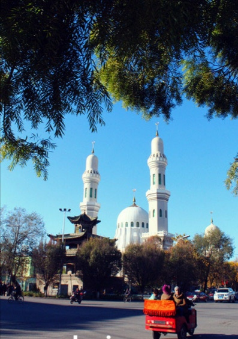

| 鹰嘴豆（学名：Cicer arietinum）为蝶形花科草本植物，别名桃尔豆、鸡豆、鸡心豆等，是印度和巴基斯坦的重要的五谷之一，在欧洲食用鹰嘴豆也十分普遍，也是维吾尔医常用药材。鹰嘴豆因其面形奇特，尖如鹰嘴，故称此名。 |
| 葡萄干(英文名称:raisin)是在日光下晒干或在阴影下晾干的葡萄的果实。夏末秋初采收，鲜用或干燥备用。葡萄干肉软清甜，营养丰富。 |
| 馕饼在新疆的历史悠久，古代称为“胡饼”、“炉饼”。馕以面粉为主要原料，多为发酵的面，但不放碱而放少许盐。除了面粉外，芝麻、洋葱、鸡蛋、清油、酥油、牛奶、糖、盐都是不可缺少的原料。馕大都呈圆形，最大的馕叫“艾曼克”馕，中间薄，边沿略厚，中央戳有许多花纹，直径足有40-50厘米。 | |
| 维吾尔语称"库洪"，源于突厥语"卡波"，意思即"甜瓜"。哈密瓜有"瓜中之王"的美称，含糖量在15%左右。形态各异，风味独特，有的带奶油味、有的含柠檬香，但都味甘如蜜，奇香袭人，饮誉国内外。在诸多哈密瓜品种中，以"红心脆"、"黄金龙"品质最佳。哈密瓜不但好吃，而且营养丰富，药用价值高。哈密瓜有180多个品种及类型，又有早熟夏瓜和晚熟冬瓜之分。冬瓜耐贮存，可以放到来年春天，味道仍然新鲜。 |
| 新疆各地的巴扎，就是 他们长期从事商贸活动的场所。 "巴扎"，系维吾尔语，意为集市、农贸市场，它遍布新疆城乡。 在南疆维吾尔人聚居地区，差不多每个乡镇、交通路口，都有巴扎。 这里平时有若干店铺，供售日杂百货。一到巴扎天(每星期一次，多 在星期五或星期日;相邻的几个巴扎，可将时间错开)，方圆几十里 的群众纷纷前来"赶巴扎"。小商小贩们也抓住时机，在巴扎上占位 设摊，扬声叫卖。一些农民也把自家生产的少量瓜果、蛋禽、羊只、 手工制品之类拿到巴扎上兜售。卖小吃、冰水、酸奶的也穿插其间， 一时人如潮涌，热闹非凡。假如这时有一两辆汽车慢慢地通过巴扎 大道，那车鸣、驴叫、人喊，交织而成的高八度，简直就是一首"巴扎 交响乐"。新疆国际大巴扎，坐落在新疆维吾尔自治区首府--乌鲁木齐。新疆国际大巴扎于2003年6月26日落成，是世界规模最大的大巴扎(维吾尔语，意为集市、农贸市场)，集伊斯兰文化、建筑、民族商贸、娱乐、餐饮于一体，是新疆旅游业产品的汇集地和展示中心，是"新疆之窗"、"中亚之窗"和"世界之窗"。2004年入选乌鲁木齐市"十佳建筑"。 |
| 红山位于乌鲁木齐市中心红山公园内，是乌鲁木齐繁荣发展的象征，它气势雄伟，形态壮观，就像一条头西脚东的巨龙一样昂首屹立在乌鲁木齐市市区中心。国家4A级景区。 红山位于乌鲁木齐市中心红山公园内，是乌鲁木齐繁荣发展的象征，它气势雄伟，形态壮观，就像一条头西脚东的巨龙一样昂首屹立在乌鲁木齐市市区中心。 红山因山体颜色呈红褐色而得名。山体长1.5公里，宽约1公里，呈东西走向，最高点海拔1391米，相对高度约400米，其紫红色沙岩为距今约2.5亿年前大陆环境下沉积形成。 | |
|  | 清真寺，也称礼拜寺，是伊斯兰教信徒礼拜的地方，词根为"拜倒"的意思，因为穆斯林礼拜时需要拜倒叩拜。 清真寺(Masjid)是伊斯兰教建筑群体的型制之一 。是穆斯林举行礼拜、穆斯林举行宗教功课、举办宗教教育和宣教等活动的中心场所。亦称礼拜寺。系阿拉伯语"麦斯吉德"(即叩拜之处)意译。《古兰经》云:"一切清真寺，都是真主的，故你们应当祈祷真主，不要祈祷任何物"。中国唐宋时期称为"堂"、"礼堂"、"祀堂"、"礼拜堂"，元代以后称"寺"、"回回堂""礼拜寺"，明代把伊斯兰教称为"清真教"，遂将"礼堂"等改称"清真寺"，沿用至今。西北地区回、东乡、保安、撒拉等族穆斯林，至今仍沿袭原称"麦斯吉德"，或称"哲马尔提"(Jama'at，即寺坊)。 基本信息 |
行政代码 |
面积 |
驻地 |
||
|---|---|---|---|---|
天山区 |
650102 |
171km2 |
东环路8号 |
|
沙依巴克区 |
650103 |
422.47km2 |
扬子江路30号 |
|
新市区 |
650104 |
142.52km2 |
北京南路8号 |
|
水磨沟区 |
650105 |
91.56km2 |
温泉路68号 |
|
头屯河区 |
650106 |
275.59km2 |
北站公路10号 |
头屯河街道、火车西站街、王家沟街道、乌昌路街道、北站西路街、兵团十二师 |
达坂城区 |
65017 |
5187.58km2 |
达坂城镇 |
艾维尔沟街、乌拉泊街道、盐湖街道、达坂城镇、东沟乡、西沟乡、阿克苏乡、柴窝堡管委 |
米东区 |
650109 |
3407.42km2 |
府前中路 |
|
乌鲁木齐县 |
650121 |
4332.16km2 |
乌鲁木齐市水磨沟区 |
| 新疆炒米粉是一道新疆本地名小吃。炒米粉使用的米粉比较粗有嚼劲，味道可以有微辣、中辣、爆辣，汤汁颜色浓郁。而且花样很多，有鸡肉炒米粉、牛肉炒米粉、蘑菇炒米粉、芹菜加泡菜炒米粉、金针菇炒米粉、火腿炒米粉、素炒米粉等。 |
| 新疆羊肉串是一道菜品，制作原料主要包括肥瘦相间羊腿肉、洋葱、孜然粉等，做法普通，口味鲜美，营养丰富。肥瘦相间羊腿肉、洋葱、孜然粉、孜然颗粒、辣椒粉、盐、糖、白芝麻、竹签。 做法 1、将羊腿肉切成体积大概1.5-2立方厘米的方块，加入2勺牛奶、适量洋葱碎抓捏腌制15分钟左右; 2、加入适量的盐、糖、孜然粉、孜然颗粒、辣椒粉和白芝麻拌匀; 3、竹签洗净后事先泡水; 4、将腌制好的羊肉块均匀的串在竹签上，刷上橄榄油，再撒上适量的孜然粉、孜然颗粒、辣椒粉和白芝麻，烤箱预热200摄氏度(392华氏度)，烤10-15分钟(中途翻面)，烤至羊肉表面吱吱冒油即可。 |
| 抓饭，维吾尔语称"波劳"，是新疆维吾尔、乌孜别克等民族人民喜爱的一种饭食，多净手掇食，故汉语称为"抓饭"。抓饭营养丰富，具有食补的功效，是维吾尔民族过节、待客的必备食品之一。因为最初是用手抓食的，故得此名。 |
| 新疆酸奶，蒙古族民间仲夏的一种常用饮料，这种饮料分两种:一是生酵酸奶，一是熟酵酸奶。 酸奶子做法简单，富有营养，有滋补作用。据说，酸奶含有乳酸菌，对肺结核、消化不良、心血管等病，均有显著疗效。在暑伏天，若喝上一杯酸奶，就像吃了冰糕一样，从心里往外冒凉气，既能防暑，又能解饿，实是难得的 清凉饮料。如喝得习惯了，别的饮料各它是无法比拟的。相传成吉思汗有一次征战途中路经蒙古鄂尔多斯地区，当时天赐他三碗酸奶子，离开鄂尔多斯时，成吉思汗胡子上的酸奶滴了下来，从此鄂尔多斯就有了福分。 |
| 红山位于乌鲁木齐市中心红山公园内，是乌鲁木齐繁荣发展的象征，它气势雄伟，形态壮观，就像一条头西脚东的巨龙一样昂首屹立在乌鲁木齐市市区中心。国家4A级景区。 |
| 去新疆乌鲁木齐维斯特滑雪场 理由1 维斯特滑雪场座落在水磨沟区雪莲山脚下,维斯特滑雪场是2007年新疆冬季旅游滑雪节主办广场之一,维斯特滑雪场也是乌鲁木齐市挂牌四S滑雪广场。维斯特滑雪场2007年新投资二百万元，用于新修雪道和上下牵引道，增加了雪的厚度。维斯特滑雪场占地4300余亩，由新疆振搏商贸有限公司开发建设，是集旅游游渡假、运动休闲、生态观光及各种游乐设施为一体的大型游乐场所。目前已建成400余亩开设了一、二、三级滑雪道和拖牵索道。滑雪场特设了灯光夜场，在山舞银蛇，奔腾跳跃中令游客可以观赏到乌鲁木齐市绚烂的夜景。 酒店是西北首家以生态.温泉为主题的五星级酒店，公司投资2.7亿元,建设面积9万多平方米，拥有国内最先进的37种水疗设备，52种不同温泉理疗，容纳1200个餐位，300间客房，有水疗、沐浴、餐饮、客房、商务、康体娱乐，好多MM高级按摩技师，为你解除一天的疲劳，只要是你想要的，这里没有你找不到的，高档航母级生态综合性休闲渡假酒店。 |
| 喀纳斯湖(Kanas Lake):国家AAAAA级旅游景区、国家地质公园、国家森林公园、中国自然保护区、国家自然遗产、全国低碳旅游实验区、中国最美湖泊，喀纳斯湖雪峰耸峙绿坡墨林，湖光山色美不胜收，被誉为"人间仙境、神的花园"。 |
| 长白山天池(Changbai mountain pool in the sky)是一座休眠火山，火山口积水成湖，夏融池水比天还要蓝;冬冻冰面雪一样的白，被16座山峰环绕，仅在天豁峰和龙门峰间有一狭道池水溢出，飞泻成长白瀑布，是松花江的正源。 |